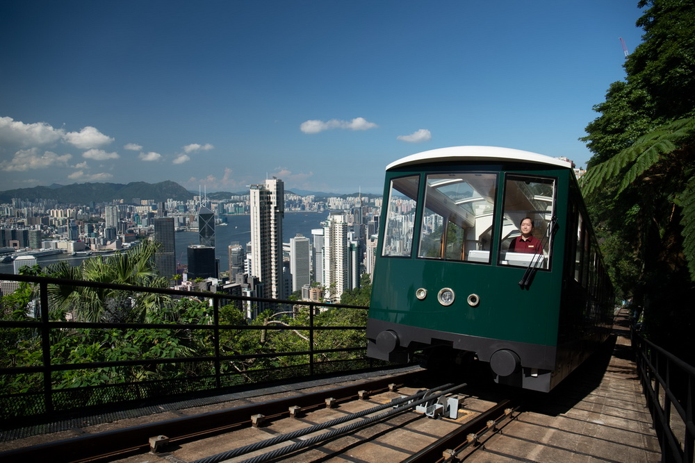
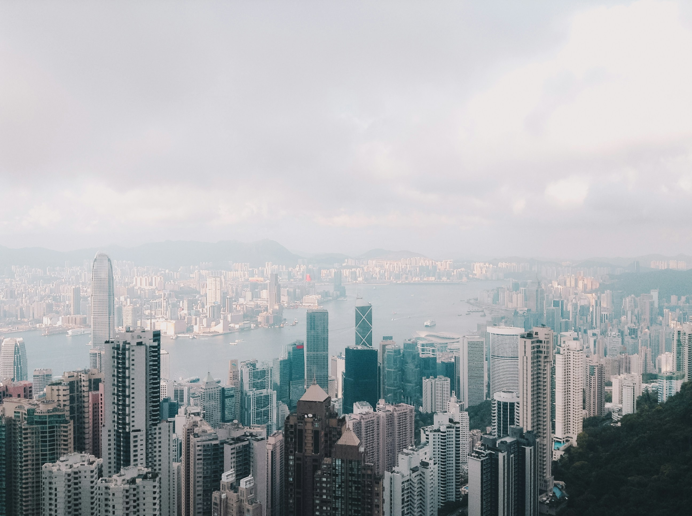
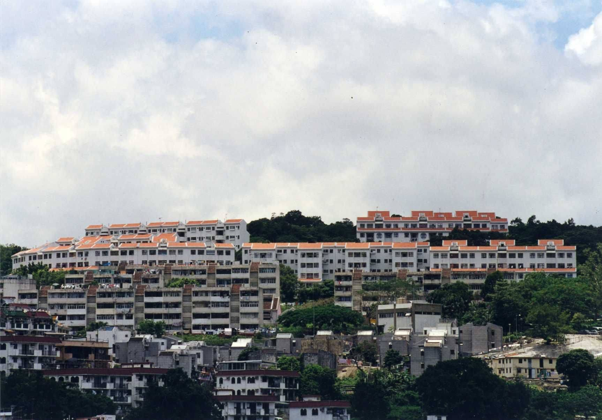

A vibrant and cosmopolitan city where the cultures of the East and West merge in perfect harmony
👇 Hover Over to Get More Information 👇

The Peak - Hong Kong's most popular attraction is more than just stunning vistas or great shopping and dining. It's an amazing collection of unique must-visit attractions, providing you with a diverse fun-filled experience of Hong Kong's living culture.

Victoria Harbor - Hong Kong Top Attraction from where you can enjoy views of harbour, skyscrapers and Avenue of Stars, Star Ferry, Symphony of Lights. Best view of the city day or night, plus the worlds largest permanent light show.

Sai Kung - dubbed the 'back garden of Hong Kong', known for its fishing villages, beautiful scenery, hiking trails, beaches and islands, geological formations and low-key lifestyle.